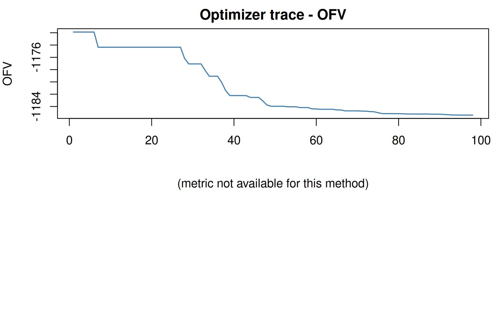

DATA → MODEL → ESTIMATE ⇄ EVALUATE → SIMULATE → REPORT
Estimation methods and controlling the fit
Where you are
Initial estimates and a first fit fitted the base model with the method from its model file (FOCEI). ferx offers several estimation methods, and every method and optimizer can be tuned. This chapter shows how to choose a method, chain methods, follow what the optimizer does, and control the fit through settings. It ends with multi-start and background fits.
The data
The base model of the workflow thread, plus the smaller warfarin example for the method comparison:
base <- ferx_example("two_cpt_oral_base")
warf <- ferx_example("warfarin")
# Model copies written in this chapter go to a scratch directory, never into the installed package.
estimation_dir <- file.path(tempdir(), "estimation")
dir.create(estimation_dir, showWarnings = FALSE)Estimation methods
method selects the estimator:
method |
Estimator | Notes |
|---|---|---|
"foce" |
First-order conditional estimation | |
"focei" |
FOCE with interaction | The default when neither the call nor the model file sets a method |
"laplace" |
Laplace approximation with the exact Hessian | Reports a different OFV than "focei". With n_agq > 1 it becomes adaptive Gauss-Hermite quadrature |
"gn", "gn_hybrid"
|
Gauss-Newton; the hybrid finishes with a FOCEI polish step | |
"saem" |
Stochastic approximation EM | Stochastic: set seed for reproducibility |
"imp" |
Importance-sampling Monte Carlo EM | With imp_eval_only = TRUE it only evaluates −2 log L and must be the last chain stage |
"impmap" |
Importance sampling assisted by the mode a posteriori | Requires mu-referencing; no IOV yet |
"bayes" |
Full MCMC | Posterior summaries in fit$bayes instead of a covariance step |
vi (model file only) |
Variational inference | Set in [fit_options]; not accepted by the method argument (see below) |
The ferx-core estimation methods pages describe each algorithm. The same warfarin model fitted with each method:
methods <- c("foce", "focei", "laplace", "gn", "gn_hybrid", "saem", "imp", "impmap", "bayes")
method_fits <- lapply(methods, function(m) {
start <- Sys.time()
# suppress the R warnings that report overriding the model file's method
f <- suppressWarnings(ferx_fit(warf$model, warf$data, method = m, verbose = FALSE))
data.frame(method = m, converged = f$converged, ofv = round(f$ofv, 2),
TVCL = signif(f$theta[["TVCL"]], 4),
seconds = round(as.numeric(difftime(Sys.time(), start, units = "secs")), 1))
})
do.call(rbind, method_fits)
#> method converged ofv TVCL seconds
#> 1 foce TRUE -280.36 0.1330 0.1
#> 2 focei TRUE -286.00 0.1327 0.1
#> 3 laplace TRUE -285.97 0.1327 0.4
#> 4 gn TRUE -280.36 0.1329 0.0
#> 5 gn_hybrid TRUE -280.36 0.1330 0.1
#> 6 saem TRUE -279.92 0.1327 0.1
#> 7 imp TRUE -279.93 0.1327 48.4
#> 8 impmap TRUE -279.93 0.1327 1.9
#> 9 bayes TRUE -593.69 0.1329 0.5The estimates are close, but OFVs are not comparable across methods. Each method computes the objective function under its own approximation. Compare OFVs only between fits made with the same method, as in Model development and selection.
Minimal runnable call
Pass method to override the model file. A character vector runs a chain: each stage starts from the previous stage’s estimates, and only the last stage produces the covariance step and diagnostics.
fit_chain <- ferx_fit(base$model, base$data, method = c("saem", "focei"), verbose = FALSE)
#> Warning: Model file [fit_options] sets `method = focei` but ferx_fit() argument
#> overrides it with `saem, focei`. The call-time value will be used.
fit_chain$method_chain
#> [1] "SAEM" "FOCEI"
data.frame(converged = fit_chain$converged, ofv = fit_chain$ofv)
#> converged ofv
#> 1 TRUE -1185.34Reading the result
Following the optimizer
With optimizer_trace = TRUE ferx records one row per objective evaluation. ferx_trace() returns it as a data frame:
fit <- ferx_fit(base$model, base$data, optimizer_trace = TRUE, verbose = FALSE)
trace <- ferx_trace(fit)
dim(trace)
#> [1] 98 39
head(trace[, c("iter", "method", "ofv", "wall_ms", "grad_norm", "step_norm", "optimizer")])
#> iter method ofv wall_ms grad_norm step_norm optimizer
#> 1 1 focei -1171.88242 6 NA NA bobyqa
#> 2 2 focei -1060.52606 11 NA 0.500000 bobyqa
#> 3 3 focei -68.00626 17 NA 0.707107 bobyqa
#> 4 4 focei -1005.78590 19 NA 0.707107 bobyqa
#> 5 5 focei -991.99282 24 NA 0.707107 bobyqa
#> 6 6 focei -1132.81660 26 NA 0.707107 bobyqaplot() on a fit draws the trace. By default (monotonic = TRUE) the OFV panel shows the running minimum for FOCE/FOCEI, because their traces include rejected line-search trial points. log_ofv = TRUE shifts the OFV by its minimum; despite the name, it is not a log transform:
plot(fit)
Run logs
ferx_runlog() writes a plain-text record of the run: model file, data summary, estimates with initial values, settings, OFV, covariance diagnostics, shrinkage and runtime. With verbose = FALSE it returns the text instead of printing it, which is convenient for saving next to the results:
log_text <- ferx_runlog(fit, verbose = FALSE)
log_lines <- strsplit(log_text, "\n")[[1]]
start_line <- grep("PARAMETER ESTIMATES", log_lines)
cat(log_lines[(start_line - 1):(start_line + 14)], sep = "\n")
#> ============================================================
#> PARAMETER ESTIMATES
#> ------------------------------------------------------------
#> PARAMETER INITIAL FINAL SE %RSE
#> --------------------------------------------------------------------------------
#> TVCL 5 4.46476 0.3217 7.2%
#> TVV1 50 48.2422 3.103 6.4%
#> TVQ 10 9.58425 0.413 4.3%
#> TVV2 100 93.7877 3.433 3.7%
#> TVKA 1.2 1.24747 0.09754 7.8%
#> ETA_CL 0.1 0.155125 0.04018 25.9%
#> ETA_V1 0.1 0.119905 0.03256 27.2%
#> ETA_Q 0.05 0.0525744 0.01445 27.5%
#> ETA_V2 0.05 0.0384571 0.01051 27.3%
#> ETA_KA 0.15 0.175835 0.04869 27.7%
#> PROP_ERR 0.02 0.01962 0.001123 5.7%With a trace, show_iterations = TRUE (default) adds an iteration history, shortened to its first and last 10 rows for long runs. gradient_tol sets the relative-gradient threshold used in its convergence checks. ferx_runlog_iters() prints the full iteration history:
iters <- ferx_runlog_iters(fit, verbose = FALSE)
cat(head(strsplit(iters, "\n")[[1]], 10), sep = "\n")
#> ============================================================
#> ITERATION HISTORY
#> ------------------------------------------------------------
#> ITER OFV dOFV STEP_NORM
#> ---- ------------- ------------- -----------
#> 1 -1171.88 --- NA
#> 2 -1060.53 +111.356 0.5
#> 3 -68.0063 +992.52 0.7071
#> 4 -1005.79 -937.78 0.7071
#> 5 -991.993 +13.7931 0.7071The gradient at the reported estimates
The run log’s convergence checks read fit$final_gradient, the gradient of the objective at the reported parameter point, in the packed space the optimizer works in (Variability: random effects, residual error and IOV). Gradient-based optimizers report the gradient they already used. The derivative-free bobyqa has none of its own, so ferx computes a central finite-difference gradient after the fit instead, which is what lets you check a converged = TRUE where it is least supported. Beside a gradient-based fit of the same model:
fit_bobyqa <- ferx_fit(warf$model, warf$data, settings = list(optimizer = "bobyqa"), verbose = FALSE)
fit_lbfgs <- ferx_fit(warf$model, warf$data, settings = list(optimizer = "nlopt_lbfgs"), verbose = FALSE)
data.frame(optimizer = c(fit_bobyqa$optimizer_label, fit_lbfgs$optimizer_label),
converged = c(fit_bobyqa$converged, fit_lbfgs$converged),
ofv = c(fit_bobyqa$ofv, fit_lbfgs$ofv),
largest_gradient = c(max(abs(fit_bobyqa$final_gradient)), max(abs(fit_lbfgs$final_gradient))))
#> optimizer converged ofv largest_gradient
#> 1 bobyqa TRUE -280.3588 7.788370e-01
#> 2 nlopt_lbfgs TRUE -280.3640 8.364343e-06
round(fit_bobyqa$final_gradient, 4)
#> [1] -0.7788 -0.2887 0.2488 0.2077 -0.2735 0.4960 -0.0401Both fits report convergence, but bobyqa stopped where the objective still slopes: its largest gradient component is 0.78, against 0.000008 for nlopt_lbfgs, which reached an OFV 0.0051 lower. The gap is small on this model; a gradient well away from zero beside converged = TRUE is the sign to refit with a gradient-based optimizer and compare.
That costs one gradient’s worth of extra objective evaluations – two per free parameter – after the fit, and never feeds the optimizer, so the estimates are the same either way. report_final_gradient = FALSE turns it off when those evaluations are expensive, as in a large ODE model:
It stays NULL for the built-in BFGS and for SAEM, which report no gradient at all.
Options that matter
Arguments of ferx_fit()
| Argument | Default | Meaning |
|---|---|---|
method |
NULL |
Estimation method or chain (above) |
threads |
NULL |
Worker threads for the per-subject loops; NULL uses available cores minus one, at most 8 |
gradient |
NULL |
Inner-loop gradient: "auto" (analytic where available) or "fd" (finite differences); NULL uses the model file |
optimizer_trace |
FALSE |
Record the optimizer trace |
settings |
NULL |
Named list of engine settings (tables below); a key that duplicates a dedicated argument is an error |
The base model’s file requests finite differences (gradient = fd). With "auto" the analytic gradient is used and the fit takes fewer objective evaluations. Pinning threads changes speed, not results:
fit_auto <- ferx_fit(base$model, base$data, gradient = "auto", verbose = FALSE)
#> Warning: Model file [fit_options] sets `gradient = fd` but ferx_fit() argument
#> overrides it with `auto`. The call-time value will be used.
fit_1thread <- ferx_fit(base$model, base$data, threads = 1, verbose = FALSE)
data.frame(
fit = c("model file (fd)", "gradient = auto", "threads = 1"),
gradient_used = c(fit$gradient_used, fit_auto$gradient_used, fit_1thread$gradient_used),
evaluations = c(fit$n_iterations, fit_auto$n_iterations, fit_1thread$n_iterations),
threads = c(fit$n_threads_used, fit_auto$n_threads_used, fit_1thread$n_threads_used),
ofv = c(fit$ofv, fit_auto$ofv, fit_1thread$ofv)
)
#> fit gradient_used evaluations threads ofv
#> 1 model file (fd) fd 98 3 -1185.403
#> 2 gradient = auto analytic 44 3 -1185.462
#> 3 threads = 1 fd 98 1 -1185.403Switching the gradient moved a second factor as well. With optimizer left at auto, ferx chooses the outer optimizer to suit the gradient, so the two fits did not use the same one, and the model-file fit says so in a general warning:
c(model_file = fit$optimizer_label, gradient_auto = fit_auto$optimizer_label)
#> model_file gradient_auto
#> "auto (bobyqa)" "auto (nlopt_lbfgs)"
optimizer_note <- grep("also changed the outer optimizer", fit$warnings, value = TRUE, fixed = TRUE)
cat(strwrap(optimizer_note, 90), sep = "\n")
#> gradient = fd also changed the outer optimizer: with optimizer = auto left in place it
#> resolved to bobyqa rather than the nlopt_lbfgs this model would have used under gradient
#> = auto, because auto picks the derivative-free optimizer when there is no exact analytic
#> gradient to feed a gradient-based one. Two factors moved, not one — if you are comparing
#> an fd arm against an auto arm, pin optimizer = bobyqa in both so the difference you
#> measure is the gradient.To measure the gradient alone, pin optimizer in both fits; settings = list(optimizer = "bobyqa") on the model-file fit removes the note. A fit on the analytic gradient can carry a different general note: some subjects could not be given the exact analytic outer gradient and used an approximation that holds their random effects fixed. The covariate model of Model development and selection shows it:
cov <- ferx_example("two_cpt_oral_cov")
fit_cov <- ferx_fit(cov$model, cov$data, verbose = FALSE)
gradient_note <- grep("could not be given the exact analytic outer gradient", fit_cov$warnings,
value = TRUE, fixed = TRUE)
cat(strwrap(gradient_note, 90), sep = "\n")
#> 4 of 30 subjects could not be given the exact analytic outer gradient during this fit
#> (e.g. subject 7) (a data shape outside the sensitivity provider's scope, or a trial point
#> where it could not be formed) and used fixed-EBE outer gradients, which omit the
#> EBE-response term the analytic gradient carries. If the fit stalls,
#> `reconverge_gradient_interval = N` restores the reconverged gradient every N-th
#> evaluation. The reported outer gradient method is the model-level route, not the
#> per-subject one.The note reports the route the gradient took, not a defect in the result: it names how many subjects took the approximation, and if a fit stalls, reconverge_gradient_interval (below) re-solves the random effects every N-th evaluation.
Helper functions
| Function | Arguments |
|---|---|
ferx_trace() |
fit (a fit, or a path to a trace CSV) |
ferx_runlog() |
fit, gradient_tol (default 0.1), show_iterations (default TRUE), verbose (FALSE returns the text) |
ferx_runlog_iters() |
fit, verbose
|
ferx_conddist() |
fit (a SAEM fit with conddist = TRUE) |
ferx_fit_async() |
model, data, further ferx_fit() arguments, tail_n, poll_interval
|
ferx_collect() |
handle (a ferx_job), verbose
|
ferx_stop() |
handle |
Settings
Everything else is set through settings = list(key = value), or with the same key in the model’s [fit_options]. The tables below are generated from the ferx-core fit options documentation and ?ferx_fit for the pinned build.
| Setting | Values | Default | Description |
|---|---|---|---|
maxiter |
integer | 500 |
Maximum outer loop iterations. maxiter = 0 is evaluation only: the engine runs one inner EBE solve at the initial parameters and reports the objective there with no outer optimisation — useful for scoring a fixed parameter set or computing standard errors at known estimates (with covariance = true). |
optimizer_trace |
true, false
|
false |
Write a per-iteration CSV to /tmp/ferx_trace_<pid>_<ts>.csv. |
checkpoint |
true, false
|
true |
Periodically save a resume point so a run that is interrupted (e.g. Ctrl-C, a crashed job) can be restarted from where it stopped instead of from scratch. |
checkpoint_interval_secs |
integer | 300 |
Minimum wall-clock seconds between checkpoint writes. Larger values reduce I/O overhead but lose more progress on an interrupt; smaller values save more often. |
| Setting | Values | Default | Description |
|---|---|---|---|
optimizer |
auto, bobyqa, slsqp, nlopt_lbfgs, mma, trust_region (plus deprecated aliases bfgs/lbfgs → nlopt_lbfgs) |
auto |
Outer-loop optimisation algorithm. Applies to method = foce / focei and to the FOCEI polish phase of method = gn_hybrid. |
outer_xtol |
float | 1e-4 |
Relative step tolerance: how far the optimizer’s step must shrink before it declares success. |
outer_ftol |
float | auto | Relative objective tolerance: the relative OFV change below which the optimizer stops. |
stagnation_guard |
true |
Short-circuit the NLopt-based outer optimizers once recent evals show no OFV improvement above 1e-3 over a window of evals — max(3·(n+1), 50) in general, shortened to max(n+1, 10) for a FOCE/FOCEI gradient-based optimizer (L-BFGS, SLSQP, MMA; not Laplace/AGQ, which have reachable outer_xtol/outer_ftol stops) once the fit has improved on its first evaluation, unless its steps are growing — each of the last two at least 1.5× the one before. |
|
reconverge_gradient_interval |
integer ≥ 0 | 0 |
How often to re-solve each subject’s inner EBE loop during the population gradient instead of holding the EBEs (η̂) and FOCE Hessian fixed. |
steihaug_max_iters |
integer | adaptive | Max CG iterations for the Steihaug subproblem (only used when optimizer = trust_region). |
report_final_gradient |
true, false
|
true |
Compute a finite-difference gradient at the reported estimates when the optimizer supplied none of its own, and report it as final_gradient with final_gradient_source = "finite_difference". |
global_search |
true, false
|
false |
Run NLopt CRS2-LM (Controlled Random Search with Local Mutation) as a gradient-free global pre-search before the local optimizer. |
global_maxeval |
integer |
0 (auto: 30 * (n_params + 1)) |
Maximum evaluations of the FOCE objective during the global pre-search. |
| Setting | Values | Default | Description |
|---|---|---|---|
inner_optimizer |
auto, bfgs, lbfgs, nelder_mead
|
auto |
Inner-loop (per-subject EBE) optimisation algorithm. auto uses dense BFGS, switching to limited-memory L-BFGS above 32 random effects. |
inner_maxiter |
integer | 200 |
Max iterations for the inner (per-subject EBE) optimizer |
inner_tol |
float | 1e-5 |
Gradient-norm convergence tolerance for the inner (per-subject EBE) optimizer. |
inner_restarts |
integer | 1 |
Guarded multi-start count for the inner (per-subject EBE) optimizer, to escape a multimodal individual objective. |
ebe_warm_start |
false |
When an inner per-subject EBE solve fails its BFGS step and falls back to Nelder–Mead, warm-start the simplex from the BFGS partial η̂ rather than cold-starting from the prior mode η=0. | |
max_unconverged_frac |
0.1 |
Fraction of subjects (with at least min_obs_for_convergence_check observations) allowed to have unconverged EBEs before the outer optimizer rejects the step (returns OFV = ∞). |
|
min_obs_for_convergence_check |
2 |
Subjects with fewer than this many observations are excluded from the max_unconverged_frac check (they still run normally). |
Two warnings about where a fit started
Both loops can end up reporting a number that describes their starting point rather than the model, and each has its own warning.
stalled_at_init says the outer loop never left its initial estimates: no free theta, omega or sigma moved. The OFV is then the objective of the initial values, and converged need not contradict it – a fit that never moved has a flat trace to plateau on. The honest way to see it is the case where it is expected: refit a model whose [parameters] block has been rewritten with the estimates of a converged run.
fit_warf <- ferx_fit(warf$model, warf$data, verbose = FALSE)
# Rewrite the [parameters] block with a fit's own estimates. stopifnot() stops when a
# declaration is not found, rather than writing the file back unchanged.
rewrite_inits <- function(fit, path) {
est <- fit$estimates
lines <- readLines(warf$model)
for (nm in c("TVCL", "TVV", "TVKA")) {
i <- grep(paste0("theta ", nm, "\\("), lines)
stopifnot(length(i) == 1L)
lines[i] <- sub(paste0("theta ", nm, "\\(([^,]+),"),
paste0("theta ", nm, "(", format(est[nm, "estimate"], digits = 12), ","),
lines[i])
}
for (nm in c("ETA_CL", "ETA_V", "ETA_KA")) {
i <- grep(paste0("omega ", nm, "\\s*~"), lines)
stopifnot(length(i) == 1L)
lines[i] <- sub("~.*$", paste0("~ ", format(est[nm, "estimate"], digits = 12)), lines[i])
}
i <- grep("sigma PROP_ERR\\s*~", lines)
stopifnot(length(i) == 1L)
lines[i] <- sub("~.*$", paste0("~ ", format(est["PROP_ERR", "estimate"], digits = 12), " (sd)"),
lines[i])
writeLines(lines, path)
lines
}
restart <- file.path(estimation_dir, "warfarin_restart.ferx")
grep("theta |omega |sigma ", rewrite_inits(fit_warf, restart), value = TRUE)
#> [1] " theta TVCL(0.132969033732, 0.001, 10.0)"
#> [2] " theta TVV(7.7306998828, 0.1, 500.0)"
#> [3] " theta TVKA(0.725206989756, 0.01, 50.0)"
#> [4] " omega ETA_CL ~ 0.0285949572894"
#> [5] " omega ETA_V ~ 0.00957692698718"
#> [6] " omega ETA_KA ~ 0.348964191455"
#> [7] " sigma PROP_ERR ~ 0.0107485286111 (sd)"
fit_restart <- ferx_fit(restart, warf$data, settings = list(optimizer = "bobyqa"), verbose = FALSE)
fit_restart_slsqp <- ferx_fit(restart, warf$data, settings = list(optimizer = "slsqp"), verbose = FALSE)
data.frame(optimizer = c("bobyqa", "slsqp"), ofv = c(fit_restart$ofv, fit_restart_slsqp$ofv),
converged = c(fit_restart$converged, fit_restart_slsqp$converged),
stalled_at_init = c(fit_restart$stalled_at_init, fit_restart_slsqp$stalled_at_init))
#> optimizer ofv converged stalled_at_init
#> 1 bobyqa -280.364 FALSE TRUE
#> 2 slsqp -280.364 TRUE TRUE
restart_warnings <- ferx_get_warnings(fit_restart, as_df = TRUE)
restart_warnings[, c("severity", "category")]
#> severity category
#> 1 critical convergence
#> 2 warning dw_autocorrelation
#> 3 warning stalled_at_initHere the start really was the optimum, so stalled_at_init is expected and harmless. What converged says beside it can depend on the optimizer: here it is TRUE under slsqp and FALSE under bobyqa. A stalled fit reported as converged is the case the warning exists for, since nothing else would flag it. Either way, read stalled_at_init first. On a first fit from a model file’s own initial values the same warning says the OFV carries no information about the model, and the remedy is different starting values, a gradient-based optimizer, or a look at final_gradient. Model development and selection gates candidates on the same verdict through reject_init_stall.
The seed has to come from a run that actually reached the optimum. The same rewrite applied to the bobyqa fit of the previous section does not stall, because that fit stopped short of the optimum (Table 6.5) and the optimizer still has somewhere to go:
from_bobyqa <- file.path(estimation_dir, "warfarin_restart_bobyqa.ferx")
invisible(rewrite_inits(fit_bobyqa, from_bobyqa))
fit_from_bobyqa <- ferx_fit(from_bobyqa, warf$data, settings = list(optimizer = "bobyqa"),
verbose = FALSE)
data.frame(seed = c("converged fit", "bobyqa fit"),
seed_ofv = c(fit_warf$ofv, fit_bobyqa$ofv),
stalled_at_init = c(fit_restart$stalled_at_init, fit_from_bobyqa$stalled_at_init))
#> seed seed_ofv stalled_at_init
#> 1 converged fit -280.3640 TRUE
#> 2 bobyqa fit -280.3588 FALSEebe_start_dependent is the inner loop’s version. It fires when re-solving the empirical Bayes estimates from a cold start at the final parameters scores materially worse than the estimates the optimizer minimised against – either the individual objective has more than one mode, or the inner loop cannot reach it from a cold start within inner_maxiter. The reported OFV is the better of the two EBE sets – the message names both – so the warning does not by itself put the estimates in doubt. What it limits is everything derived from the EBEs: IPRED, IWRES, CWRES, shrinkage and the covariance step (Diagnosing the model). Raise inner_maxiter to rule out the budget, and inner_restarts for a suspected second mode, then compare.
“Materially” is a small margin relative to the OFV, so on a fit that stops at a fragile point the warning can come and go with rounding. The bundled SDE fit of Experimental features, which stops at a saddle point, raises it on some machines and not on others.
WarningA starved inner loop is not reported as such at this build
When too many subjects’ inner loops fail to converge – a larger fraction of them than max_unconverged_frac, 0.1 by default – ferx rejects the outer trial and returns a penalty instead of an objective, which pushes the optimizer towards the middle of the parameter box. If every trial is rejected, a gradient-based optimizer converges on that penalty, and the fit reports converged = TRUE at the midpoint of the declared bounds, with no convergence or ebe_start_dependent warning. Cutting inner_maxiter far below its default does that on warfarin:
fit_starved <- ferx_fit(warf$model, warf$data, settings = list(inner_maxiter = 5), verbose = FALSE)
starved_warnings <- ferx_get_warnings(fit_starved, as_df = TRUE)
# Geometric midpoints of the declared theta bounds, read from the model file.
bounds <- regmatches(readLines(warf$model),
regexec("theta (\\w+)\\([^,]+,\\s*([^,]+),\\s*([^)]+)\\)", readLines(warf$model)))
bounds <- do.call(rbind, Filter(length, bounds))
midpoints <- setNames(sqrt(as.numeric(bounds[, 3]) * as.numeric(bounds[, 4])), bounds[, 2])
rbind(default_budget = fit_warf$theta, inner_maxiter_5 = fit_starved$theta,
bound_midpoint = midpoints[names(fit_warf$theta)])
#> TVCL TVV TVKA
#> default_budget 0.132969 7.730700 0.7252070
#> inner_maxiter_5 0.100000 7.071068 0.7071068
#> bound_midpoint 0.100000 7.071068 0.7071068
data.frame(converged = fit_starved$converged, ofv = fit_starved$ofv, default_ofv = fit_warf$ofv)
#> converged ofv default_ofv
#> 1 TRUE 220.5222 -280.364
starved_warnings[, c("severity", "category")]
#> severity category
#> 1 warning covariance_regularized
#> 2 warning eta_shrinkage
#> 3 warning inflated_rse
#> 4 warning dw_autocorrelation
#> 5 critical condition_numberThe other warnings – the critical condition_number among them – say the result is unusable, but not why. Estimates sitting exactly on the midpoints of their bounds are the sign. Leave inner_maxiter at its default unless you have a reason, and compare a reduced budget against a fit with the default before trusting it. A derivative-free optimizer such as bobyqa stalls at the initial estimates instead, which stalled_at_init does report (ferx-core #1617).
Choosing the outer optimizer on warfarin:
optimizers <- c("bobyqa", "slsqp", "nlopt_lbfgs", "mma", "trust_region")
do.call(rbind, lapply(optimizers, function(o) {
f <- ferx_fit(warf$model, warf$data, settings = list(optimizer = o), verbose = FALSE)
data.frame(optimizer = f$optimizer_label, converged = f$converged, ofv = round(f$ofv, 4),
evaluations = f$n_iterations)
}))
#> optimizer converged ofv evaluations
#> 1 bobyqa TRUE -280.3588 64
#> 2 slsqp TRUE -280.3640 90
#> 3 nlopt_lbfgs TRUE -280.3640 47
#> 4 mma TRUE -280.3640 58
#> 5 trust_region TRUE -280.3640 42The optimizers agree to within a small tolerance on this model. A clearly higher OFV for one optimizer would point to a convergence problem with it on your model. global_search = TRUE runs a global search before the local optimizer:
fit_global <- ferx_fit(warf$model, warf$data,
settings = list(global_search = TRUE, global_maxeval = 500), verbose = FALSE)
data.frame(converged = fit_global$converged, ofv = fit_global$ofv)
#> converged ofv
#> 1 TRUE -280.364Multi-start
n_starts > 1 runs several fits from perturbed starting values and keeps the converged result with the lowest OFV. Start 0 always uses the model file’s exact values; the rest are perturbed by start_sigma. It is worth reaching for on the surfaces that are prone to local minima – Michaelis-Menten elimination and its VMAX/KM ridge, a full block omega over three or more etas, or many correlated covariate parameters – and the starts share the same thread pool as the per-subject loops, so the wall time grows with the number of starts rather than staying flat – the timing below shows what it costs on this machine. Widen start_sigma when the surface is ridge-shaped rather than merely bumpy. The bundled mm_multistart model (Michaelis-Menten elimination) sets n_starts = 8 in its model file:
| Setting | Values | Default | Description |
|---|---|---|---|
n_starts |
1 |
Number of independent optimization runs. 1 disables multi-start (no behaviour change). |
|
start_sigma |
0.3 |
Log-space perturbation applied to initial theta values for starts 1..n. | |
multi_start_seed |
42 |
RNG seed for the multi-start theta perturbations. Independent of seed (SAEM) so that changing the SAEM seed does not silently alter which perturbed starting points are used in FOCE multi-start runs. |
mm <- ferx_example("mm_multistart")
ferx_model_get_section(mm$model, "fit_options")
#> # [fit_options]
#> method = focei
#> maxiter = 500
#> covariance = true
#> n_starts = 8
#> start_sigma = 0.5 # wider perturbation for a ridge-shaped surface
#> multi_start_seed = 42
start <- Sys.time()
fit_single <- ferx_fit(mm$model, mm$data, settings = list(n_starts = 1), verbose = FALSE)
#> Warning: Model file [fit_options] sets `n_starts = 8` but ferx_fit() argument
#> overrides it with `1`. The call-time value will be used.
single_s <- as.numeric(difftime(Sys.time(), start, units = "secs"))
start <- Sys.time()
fit_multi <- ferx_fit(mm$model, mm$data, verbose = FALSE)
multi_s <- as.numeric(difftime(Sys.time(), start, units = "secs"))
data.frame(fit = c("single start", "8 starts"), ofv = c(fit_single$ofv, fit_multi$ofv),
seconds = round(c(single_s, multi_s), 1))
#> fit ofv seconds
#> 1 single start -453.3985 0.9
#> 2 8 starts -453.3985 6.5
ferx_get_warnings(fit_multi, as_df = TRUE)[, c("severity", "category", "message")]
#> severity category
#> 1 info multi_start
#> message
#> 1 Multi-start: best result from start 3/8 (OFV = -453.3985)On this build the single start already reaches the same OFV, so here the extra starts only confirm it, at several times the wall time. That is the outcome you hope for rather than evidence that multi-start is unnecessary – the alternative is not knowing whether the one start you ran was the good one. When a start other than the first wins, an info note in the multi_start category says which. Here one did, but only by less than the printed precision of the OFV, so the single start has the same value to every digit shown; which start comes out lowest by such a margin can differ from one machine to the next.
The two remedies for a stuck fit overlap, and ferx says how it resolves that rather than leaving you to guess. The global pre-search ignores its starting point by design, so running it on every perturbed start would overwrite the perturbation; instead it runs on start 0 only, and the remaining starts are ordinary perturbed local fits:
fit_both <- ferx_fit(warf$model, warf$data, verbose = FALSE,
settings = list(global_search = TRUE, global_maxeval = 200, n_starts = 2))
both_notes <- ferx_get_warnings(fit_both, as_df = TRUE)
both_notes[both_notes$category == "optimizer_config", "message"]
#> [1] "global_search = true with n_starts = 2: CRS2-LM only runs on start 0 (it ignores the starting point and would override the theta perturbation on starts 1..2)"So the two do combine, with the division of labour the note describes: the global search looks for the basin from the file’s own values, and the perturbed starts probe around it. The note is info, not a refusal.
SAEM
The bundled warfarin_saem model sets its SAEM options in the model file. With conddist = TRUE, SAEM also samples each subject’s conditional distribution of the random effects after fitting. ferx_conddist() returns it:
| Setting | Values | Default | Description |
|---|---|---|---|
n_exploration |
150 |
Phase 1 iterations (step size = 1) | |
n_convergence |
250 |
Phase 2 iterations (step size = 1/k) | |
n_mh_steps |
auto |
Block Metropolis-Hastings steps per subject per iteration, or auto — the default — to size it from the dataset as 2.5 × observations per subject per η, clamped to [6, 20]. |
|
n_leapfrog |
0 |
Leapfrog steps per HMC proposal (0 = use MH). When > 0, subjects for which HMC is unavailable (ODE model, missing analytical PK path, non-finite Ω, unsupported TV-cov path) fall back to MH using n_mh_steps proposals. |
|
scale_adaptation |
robbins_monro |
How the MH step scales are adapted. interval is the historical rule (×1.1 / ×0.9 every adapt_interval); robbins_monro steps log δ every iteration by c·k^-0.6·(accept − target). |
|
scale_deadband |
0.15,0.60 |
Acceptance window lo,hi in which the robbins_monro step is skipped, leaving the scale untouched; outside it the ordinary step applies. |
|
adapt_interval |
50 |
Iterations between step-size adaptation, under scale_adaptation = interval. |
|
omega_burnin |
20 |
Initial exploration iterations during which Ω (and ΩIOV) are held at their starting values while the MH chain warms up. | |
mstep_damping |
1.0 (off); 0.03 with iiv_on_ruv
|
Optional exploration-phase cap on the stochastic-approximation step for the numerical θ/σ M-step (the channel that moves a theta with no ETA). | |
mstep_solver |
bobyqa |
Which solver moves the numerical θ/σ M-step — the channel that estimates a theta with no ETA. | |
mstep_draws |
1 |
Number of E-step draws the bobyqa M-step objective is averaged over. |
|
seed |
12345 |
RNG seed for reproducibility | |
conddist |
false |
Run a post-fit conditional-distribution pass estimating each subject’s p(η_i \| y_i) by MCMC. |
|
conddist_nsamp |
200 |
Retained MCMC draws per subject in the conditional-distribution pass. | |
conddist_burnin |
20 |
Burn-in draws discarded before accumulation, to forget the EBE-mode warm start. | |
conddist_keep_samples |
false |
Retain the raw per-subject draws (written to {model}-conddist-samples.csv), not just the mean/SD. |
ws <- ferx_example("warfarin_saem")
ferx_model_get_section(ws$model, "fit_options")
#> # [fit_options]
#> method = saem
#> n_exploration = 150
#> n_convergence = 250
#> n_mh_steps = 3
#> omega_burnin = 20 # iterations to hold Omega fixed while the sampler warms up
#> adapt_interval = 10 # MH proposal-scale adaptation cadence
#> seed = 12345
#> covariance = true
fit_saem <- ferx_fit(ws$model, ws$data, settings = list(conddist = TRUE), verbose = FALSE)
cond <- ferx_conddist(fit_saem)
cond
#> SAEM conditional distribution (200 draws retained, 20 burn-in)
#> Distribution-based eta-shrinkage:
#> ETA_CL -5.6%
#> ETA_V -4.9%
#> ETA_KA -5.0%
#>
#> ID ETA COND_MEAN COND_SD COND_MODE
#> 1 1 ETA_CL 0.02990887 0.003426887 0.030016196
#> 2 1 ETA_V 0.06564793 0.004328043 0.065100748
#> 3 1 ETA_KA 0.37202065 0.010249928 0.370265310
#> 4 2 ETA_CL 0.01801702 0.003408088 0.017433170
#> 5 2 ETA_V -0.06369471 0.005443530 -0.064160605
#> 6 2 ETA_KA -0.41406628 0.010829274 -0.412442584
#> 7 3 ETA_CL -0.02241230 0.003868248 -0.022643863
#> 8 3 ETA_V 0.08902340 0.005141611 0.090131702
#> 9 3 ETA_KA 0.14938896 0.012759517 0.152553528
#> 10 4 ETA_CL -0.02623475 0.004283099 -0.026806979
#> 11 4 ETA_V -0.20995161 0.006625908 -0.212270745
#> 12 4 ETA_KA -0.72283755 0.012431383 -0.729949960
#> 13 5 ETA_CL -0.23116675 0.004400531 -0.232185832
#> 14 5 ETA_V -0.12157572 0.005449429 -0.122426189
#> 15 5 ETA_KA 0.48159296 0.015353154 0.481360397
#> 16 6 ETA_CL -0.00850389 0.003629024 -0.008308632
#> 17 6 ETA_V 0.06920304 0.005577278 0.069526970
#> 18 6 ETA_KA 1.24508050 0.026734245 1.246611770
#> 19 7 ETA_CL 0.29333967 0.004131073 0.291564502
#> 20 7 ETA_V 0.06578775 0.006967268 0.061817879
#> 21 7 ETA_KA -0.65928226 0.012829157 -0.665708667
#> 22 8 ETA_CL 0.27063668 0.003548004 0.270259804
#> 23 8 ETA_V -0.01749820 0.004521899 -0.018849155
#> 24 8 ETA_KA -0.03615856 0.010028578 -0.040178269
#> 25 9 ETA_CL -0.26215259 0.004567717 -0.260350660
#> 26 9 ETA_V 0.09215499 0.005901563 0.092853518
#> 27 9 ETA_KA 0.09903938 0.013892702 0.099177896
#> 28 10 ETA_CL -0.05901161 0.004367503 -0.058891821
#> 29 10 ETA_V 0.03899730 0.006177651 0.037828604
#> 30 10 ETA_KA -0.49956611 0.010584745 -0.501392022print() on a ferx_conddist object shows the distribution-based shrinkage and the per-subject conditional mean, SD and mode. fit$saem_n_subjects_hmc reports how many subjects used HMC proposals (n_leapfrog > 0). It is not set here, because this model uses Metropolis-Hastings proposals.
How those proposals are tuned is set by three defaults. scale_adaptation = "robbins_monro" adjusts each subject’s step scale every iteration towards the target acceptance rate, but leaves it alone while the acceptance rate is inside scale_deadband. n_mh_steps = "auto" sizes the number of proposals from the data. mstep_damping is off except in models with iiv_on_ruv. interval is the older rule, which rescales only every adapt_interval iterations. Passing it with n_mh_steps = 20 and mstep_damping = 0.03 gives the previous defaults back:
saem_variants <- list(
defaults = NULL,
previous_defaults = list(scale_adaptation = "interval", n_mh_steps = 20, mstep_damping = 0.03),
no_deadband = list(scale_deadband = "none")
)
# suppress the R warning that reports overriding the model file's n_mh_steps
saem_runs <- lapply(saem_variants, function(s) suppressWarnings(
ferx_fit(ws$model, ws$data, settings = s, verbose = FALSE)))
t(sapply(saem_runs, function(f) c(ofv = f$ofv, f$theta)))
#> ofv TVCL TVV TVKA
#> defaults -285.9997 0.1326946 7.737729 0.8106628
#> previous_defaults -286.0020 0.1327188 7.738384 0.8110327
#> no_deadband -286.0038 0.1327031 7.739311 0.8113093The model file sets n_mh_steps = 3, so auto does not apply to it, and previous_defaults overrides that with 20. On this well-informed model every variant lands within 0.08% of the default estimates. The choice matters when the sampler is far from its target acceptance rate, which the ferx-core SAEM page measures on harder models.
Thetas that no random effect reaches
SAEM moves most thetas through their random effects: a typical value such as TVCL follows the mean of its eta, and a covariate exponent is updated together with the typical value it scales. A theta that no such update reaches is left to a numerical M-step instead, which ferx-core describes as noisier and able to settle away from the optimum (thetas the closed-form update cannot reach). The covariate model of Model development and selection runs into this: THETA_WT scales both CL and V1 and can join only one of the two updates. It joins CL’s; V1’s is not used, which leaves TVV1 to the numerical step, and the fit’s note names the thetas involved. Two settings act on that step: mstep_solver = "score_sa" replaces its derivative-free solver, and mstep_draws averages that solver’s objective over several E-step draws instead of one. A SAEM fit’s own OFV is a FOCE approximation, so the fits are compared on the importance-sampled −2 log-likelihood at their final estimates (Importance sampling, below):
# Fit, then evaluate the importance-sampled -2 log-likelihood at the final estimates.
# suppress the R warnings that report overriding the model file's method and covariance setting
is_fit <- function(model, method, settings = list()) {
suppressWarnings(ferx_fit(model, cov$data, method = c(method, "imp"), covariance = FALSE,
settings = c(list(imp_eval_only = TRUE, imp_seed = 1), settings),
verbose = FALSE))
}
is_table <- function(fits, thetas) {
t(sapply(fits, function(f) c(is_minus2ll = f$importance_sampling$minus2_log_likelihood,
mc_error = f$importance_sampling$mc_standard_error, f$theta[thetas])))
}
mstep_fits <- list(
focei = is_fit(cov$model, "focei"),
saem = is_fit(cov$model, "saem", list(seed = 1)),
saem_300_700 = is_fit(cov$model, "saem", list(seed = 1, n_exploration = 300, n_convergence = 700)),
saem_score_sa = is_fit(cov$model, "saem", list(seed = 1, mstep_solver = "score_sa")),
saem_4_draws = is_fit(cov$model, "saem", list(seed = 1, mstep_draws = 4))
)
numerical_note <- grep("stay on the numerical M-step", mstep_fits$saem$warnings, value = TRUE, fixed = TRUE)
cat(strwrap(numerical_note, 90), sep = "\n")
#> [SAEM] SAEM: covariate mu-reference on ETA_V1 (reads TVV1, THETA_WT) is not used:
#> THETA_WT already belongs to another covariate mu-reference; TVV1, THETA_WT stay on the
#> numerical M-step (#619).
round(is_table(mstep_fits, c("TVV1", "THETA_WT", "THETA_CRCL")), 3)
#> is_minus2ll mc_error TVV1 THETA_WT THETA_CRCL
#> focei -1199.382 0.320 48.587 0.653 0.565
#> saem -1195.659 0.287 48.515 0.206 0.571
#> saem_300_700 -1193.310 0.338 47.739 0.060 0.606
#> saem_score_sa -1192.229 0.293 48.233 0.010 0.645
#> saem_4_draws -1195.135 0.293 48.309 0.175 0.567
is_gap <- function(f) f$importance_sampling$minus2_log_likelihood -
mstep_fits$focei$importance_sampling$minus2_log_likelihood
wt <- function(f) f$theta[["THETA_WT"]]The note also names THETA_WT, which is inaccurate at this build: the exponent belongs to CL’s update, which keeps it out of the numerical step (ferx-core #1620). SAEM leaves THETA_WT at 0.21, where FOCEI finds 0.65, and its importance-sampled −2 log-likelihood is 3.7 units above FOCEI’s, against a Monte Carlo error of about 0.3. mstep_draws = 4 gives 0.18 and leaves the gap at 4.2; ferx-core expects it to help little while consecutive draws of the default sampler are strongly correlated.
WarningA shared covariate exponent drifts to its bound at this build
The declined update is not harmless. The longer SAEM runs, the further THETA_WT falls: with the default solver and a schedule of n_exploration = 300, n_convergence = 700 (saem_300_700 above), it ends at 0.06. mstep_solver = "score_sa", which corrects this step for a theta that is in no group at all, gets there within the default schedule (0.01, 7.2 units above FOCEI on the importance-sampled objective), and a fit with the covariance step reports it as a boundary_estimate. Neither solver setting is the cure; the model is, as below (ferx-core #1620).
score_sa_cov <- suppressWarnings(ferx_fit(cov$model, cov$data, method = "saem",
settings = list(seed = 1, mstep_solver = "score_sa"),
verbose = FALSE))
score_sa_warnings <- ferx_get_warnings(score_sa_cov, as_df = TRUE)
score_sa_warnings[score_sa_warnings$category == "boundary_estimate", "message"]
#> [1] "Parameter estimate(s) pinned to an optimizer bound: THETA_WT (0.0100 at lower bound). This often indicates non-identifiability or a too-tight bound; inspect the affected parameter(s) and consider relaxing the bound or simplifying the model."The structural remedy is to let the regular update reach the exponent. With its own exponent for V1, no theta of either covariate group is read anywhere else, and SAEM no longer leaves any of them to the numerical step:
separate_wt <- file.path(estimation_dir, "two_cpt_oral_cov_separate_wt.ferx")
sep_lines <- sub("V1 = TVV1 * (WT / 70)^THETA_WT * exp(ETA_V1)",
"V1 = TVV1 * (WT / 70)^THETA_WT_V1 * exp(ETA_V1)", readLines(cov$model), fixed = TRUE)
sep_lines <- append(sep_lines, " theta THETA_WT_V1(0.75, 0.01, 5.0)",
after = grep("theta THETA_WT\\(", sep_lines))
# Stop unless both edits were made: the new exponent is used and declared.
stopifnot(sum(grepl("THETA_WT_V1", sep_lines, fixed = TRUE)) == 2)
writeLines(sep_lines, separate_wt)
separate_fits <- list(focei = is_fit(separate_wt, "focei"),
saem = is_fit(separate_wt, "saem", list(seed = 1)))
round(is_table(separate_fits, c("TVV1", "THETA_WT", "THETA_WT_V1", "THETA_CRCL")), 3)
#> is_minus2ll mc_error TVV1 THETA_WT THETA_WT_V1 THETA_CRCL
#> focei -1199.454 0.312 48.563 0.726 0.578 0.556
#> saem -1199.403 0.316 48.445 0.735 0.563 0.559Now SAEM and FOCEI agree: the importance-sampled objectives differ by 0.05, within the Monte Carlo error, and SAEM puts the clearance exponent at 0.74 against FOCEI’s 0.73. Whether to share one exponent between two parameters is a modelling decision; under SAEM it also decides which update estimates it.
Laplace and adaptive quadrature
| Setting | Values | Default | Description |
|---|---|---|---|
n_agq |
1 |
Gauss-Hermite nodes per random effect. 1 reproduces the Laplace approximation exactly; odd values are conventional (they keep a node at the mode). |
|
agq_eval_only |
See ?ferx_fit and the ferx-core fit options page. |
n_agq is the number of Gauss-Hermite nodes per random effect. The cost grows as n_agq to the power of the number of etas, so higher values suit models with few random effects. agq_eval_only uses quadrature only to evaluate the likelihood at a fitted point (see the ferx-core AGQ page).
fit_lap <- ferx_fit(warf$model, warf$data, method = "laplace", verbose = FALSE)
#> Warning: Model file [fit_options] sets `method = foce` but ferx_fit() argument
#> overrides it with `laplace`. The call-time value will be used.
fit_agq <- ferx_fit(warf$model, warf$data, method = "laplace", settings = list(n_agq = 3),
verbose = FALSE)
#> Warning: Model file [fit_options] sets `method = foce` but ferx_fit() argument
#> overrides it with `laplace`. The call-time value will be used.
c(laplace = fit_lap$ofv, agq_3_nodes = fit_agq$ofv)
#> laplace agq_3_nodes
#> -285.9702 -285.9739Gauss-Newton
| Setting | Values | Default | Description |
|---|---|---|---|
gn_lambda |
Levenberg-Marquardt damping factor (default 0.01). Larger values make steps more conservative. |
Importance sampling
| Setting | Values | Default | Description |
|---|---|---|---|
imp_samples |
1000 |
Importance samples K per subject. 2000–5000 recommended for publication-quality MC SE. | |
imp_proposal_df |
5.0 |
Student-t proposal degrees of freedom (≥ 1), or normal/mvn for a multivariate-normal proposal. |
|
imp_seed |
12345 |
RNG seed. Same seed → identical result. | |
imp_low_ess_threshold |
0.1 |
Subjects with normalized ESS below this fraction get flagged in the result. | |
imp_iterations |
200 |
MCEM iterations (estimator only). | |
imp_averaging |
50 |
Terminal iterations averaged into the reported estimate (estimator only). | |
imp_auto |
true |
Adaptive sample count. When true, imp_samples is the starting count and is ramped up (×2/iteration, cap 10000) while the objective’s Monte-Carlo SE exceeds 1.0. |
|
imp_defensive_alpha |
0.0 |
Defensive-mixture weight (issue #528), opt-in. Each subject draws this fraction of its samples from the prior N(0, Ω) rather than the mode-centred proposal, and every sample is scored under the mixture density. |
|
imp_eval_only |
false |
true ⇒ evaluate −2 log L at fixed parameters; must be the terminal chain stage. |
A common use of imp is to evaluate the marginal likelihood at a FOCEI solution: the final stage of a chain, with imp_eval_only = TRUE. The result is in fit$importance_sampling:
fit_imp <- ferx_fit(base$model, base$data, method = c("focei", "imp"),
settings = list(imp_eval_only = TRUE, imp_seed = 1), verbose = FALSE)
#> Warning: Model file [fit_options] sets `method = focei` but ferx_fit() argument
#> overrides it with `focei, imp`. The call-time value will be used.
fit_imp$importance_sampling[c("minus2_log_likelihood", "mc_standard_error", "n_samples",
"ess_min", "ess_median")]
#> $minus2_log_likelihood
#> [1] -1185.468
#>
#> $mc_standard_error
#> [1] 0.3090902
#>
#> $n_samples
#> [1] 1000
#>
#> $ess_min
#> [1] 0.08389077
#>
#> $ess_median
#> [1] 0.7900041?ferx_fit notes that plain "imp" re-centers its proposal from the previous iteration’s samples and can be fragile on rich data. It recommends "impmap", or a warm start such as c("focei", "imp").
| Setting | Values | Default | Description |
|---|---|---|---|
impmap_iterations |
200 |
Number of MCEM iterations (parameter updates). | |
impmap_samples |
300 |
Importance samples K per subject per iteration. Larger K reduces Monte-Carlo noise at linear cost. | |
impmap_proposal_df |
4 |
Proposal degrees of freedom. A finite value ≥ 1 gives a heavier-tailed Student-t (default 4); normal (or mvn) gives a multivariate-normal proposal. |
|
impmap_seed |
12345 |
RNG seed. Same seed → identical estimates. | |
impmap_averaging |
50 |
Final iterations whose parameters are averaged into the reported estimate (Monte-Carlo variance reduction). | |
impmap_low_ess_threshold |
0.1 |
Subjects with normalized ESS below this fraction are flagged as poorly sampled. | |
impmap_trace |
false |
Logical; when TRUE, collect per-iteration parameter values into fit$impmap_trace. | |
impmap_mceta |
0 |
Number of additional random starting points for per-subject MAP optimization. | |
impmap_sobol |
false |
Use Sobol quasi-random sequences (with Cranley-Patterson randomization) for IS draws instead of pseudo-random. | |
impmap_auto |
true |
Adaptive sample count. When true, impmap_samples is the starting count and is ramped up (×2/iteration, cap 10000) while the objective’s Monte-Carlo SE exceeds 1.0. |
|
iscale_min |
0.1 |
Minimum proposal scaling factor for adaptive IS. The IS proposal covariance is multiplied by s² where s is chosen from [iscale_min, iscale_max] to maximise per-subject ESS. |
|
iscale_max |
10.0 |
Maximum proposal scaling factor. |
Bayesian estimation
| Setting | Values | Default | Description |
|---|---|---|---|
bayes_warmup |
Warmup (burn-in + adaptation) sweeps per chain, discarded from the posterior (default 1000). | ||
bayes_iters |
Retained sampling sweeps per chain, before thinning (default 1000). | ||
bayes_chains |
Number of independent chains (default 4); used for split-R-hat. | ||
bayes_thin |
Keep every bayes_thin-th sampling draw (default 1). | ||
bayes_seed |
Base RNG seed for the Bayes sampler. Independent of seed / saem_seed. | ||
n_leapfrog |
0 |
Leapfrog steps per HMC proposal (0 = use MH). When > 0, subjects for which HMC is unavailable (ODE model, missing analytical PK path, non-finite Ω, unsupported TV-cov path) fall back to MH using n_mh_steps proposals. |
method = "bayes" samples the posterior with several MCMC chains and summarises the draws. On warfarin the default run converges:
# suppress the R warning that reports overriding the model file's method
fit_bayes <- suppressWarnings(ferx_fit(warf$model, warf$data, method = "bayes", verbose = FALSE))
with(fit_bayes$bayes, data.frame(parameter = param_names, mean = mean, q025 = q025, q975 = q975,
rhat = rhat, ess_bulk = ess_bulk))
#> parameter mean q025 q975 rhat ess_bulk
#> 1 TVCL 0.13292699 0.118466516 0.14909731 1.0000507 3851.535
#> 2 TVV 7.73612524 7.231988216 8.26804496 1.0000514 4000.000
#> 3 TVKA 0.82568792 0.547834854 1.19766665 0.9994549 3922.125
#> 4 OMEGA(1,1) 0.03560535 0.015191153 0.08063791 1.0006849 3176.216
#> 5 OMEGA(2,2) 0.01152262 0.005036351 0.02591896 0.9996871 3043.864
#> 6 OMEGA(3,3) 0.37608585 0.161713899 0.85520781 1.0001416 3472.990
#> 7 PROP_ERR 0.01065641 0.009024933 0.01257930 1.0026334 742.293
data.frame(converged = fit_bayes$converged, max_rhat = fit_bayes$bayes$max_rhat,
chains = fit_bayes$bayes$n_chains, draws_per_chain = fit_bayes$bayes$n_draws_per_chain)
#> converged max_rhat chains draws_per_chain
#> 1 TRUE 1.002633 4 1000fit$bayes holds the posterior mean, median and 2.5%/97.5% quantiles, split-R-hat, effective sample sizes and Monte Carlo standard errors per parameter. R-hat compares the chains with each other: values near 1 mean they sample the same distribution, and ferx marks a run unconverged when the largest one exceeds 1.01. Here the largest is 1.003 and the smallest bulk effective sample size 742, so the posterior summaries can be used. Parameter uncertainty discusses posterior intervals as a measure of parameter uncertainty.
WarningBayes does not converge on the two-compartment models with its defaults at this build
On the base model of this chapter the default run ends unconverged, and its warning recommends longer chains. Four times longer chains do not help. HMC proposals for the random effects, which n_leapfrog switches on, do:
bayes_settings <- list(default = list(), four_times_longer = list(bayes_warmup = 4000, bayes_iters = 4000),
four_times_longer_hmc = list(bayes_warmup = 4000, bayes_iters = 4000, n_leapfrog = 10))
# suppress the R warnings that report overriding the model file's method
bayes_base <- lapply(bayes_settings, function(s) {
suppressWarnings(ferx_fit(base$model, base$data, method = "bayes", settings = s, verbose = FALSE))
})
w_bayes <- ferx_get_warnings(bayes_base$default, as_df = TRUE)
strwrap(w_bayes$message[grepl("R-hat", w_bayes$message)], 80)
#> [1] "Bayes: max split-R-hat = 1.194 (> 1.01) — chains may not have converged;"
#> [2] "increase bayes_warmup / bayes_iters."
do.call(rbind, lapply(names(bayes_base), function(run) {
b <- bayes_base[[run]]$bayes
data.frame(run = run, draws_per_chain = b$n_draws_per_chain, converged = bayes_base[[run]]$converged,
max_rhat = b$max_rhat, min_ess_bulk = min(b$ess_bulk))
}))
#> run draws_per_chain converged max_rhat min_ess_bulk
#> 1 default 1000 FALSE 1.194157 6.912396
#> 2 four_times_longer 4000 FALSE 1.176706 7.291364
#> 3 four_times_longer_hmc 4000 TRUE 1.007691 541.359176With the default Metropolis-Hastings proposals and 4000 draws per chain the largest R-hat is still 1.18, so the chains have not settled on one distribution and the posterior summaries of these fits are not usable. Those proposals move the random effects too slowly on this model for longer chains to make up for it (ferx-core #1626). With n_leapfrog = 10 each subject’s random effects get HMC proposals instead, which ferx offers for analytical models without IOV, and the same chain length converges: the largest R-hat is 1.008 and the smallest bulk effective sample size 541. These settings converge on this model, but they are no recipe: read max_rhat on every run. The covariate model of Parameter uncertainty converges with neither kind of proposal. For parameter uncertainty on that model use the covariance step, SIR or the bootstrap (Parameter uncertainty).
Variational inference
Variational inference fits an approximate posterior of each subject’s random effects jointly with the population parameters, by maximizing a lower bound on the likelihood (the ELBO). ferx_fit()’s method argument does not accept it:
It runs when the model file sets it. A copy of the base model with method = vi in [fit_options]:
vi_model <- file.path(estimation_dir, "two_cpt_oral_base_vi.ferx")
writeLines(sub("^ method = focei", " method = vi", readLines(base$model)), vi_model)
invisible(ferx_model_get_section(vi_model, "fit_options"))
#> # [fit_options]
#> method = vi
#> maxiter = 500
#> covariance = true
#> # Finite differences rather than the default `auto`. This was a workaround
#> # for ferx-core #1290: the analytic-gradient path used to stall at the
#> # initial estimates on this model and dataset (`NLopt stopped: Failure` on
#> # the first evaluation, no parameter moves), which a search then had to
#> # reject as an init-stalled base fit. That is fixed, and both paths now
#> # converge; `fd` is kept explicit so the example's published numbers do not
#> # move with the gradient default.
#> gradient = fd
fit_vi <- ferx_fit(vi_model, base$data, verbose = FALSE)
c(method = fit_vi$method, ofv = fit_vi$ofv)
#> method ofv
#> "VI" "NaN"The OFV is NaN by design: the ELBO is a lower bound, not −2 log-likelihood, and cannot be compared with other methods. The fit says so in a general warning. vi_final_ofv = "laplace" evaluates a Laplace OFV at the VI estimate. The vi_* settings can be passed with settings like any other:
# suppress the R warning about the model file's maxiter, which VI does not use
fit_vi_laplace <- suppressWarnings(ferx_fit(vi_model, base$data, settings = list(vi_final_ofv = "laplace"),
verbose = FALSE))
rbind(vi = c(ofv = fit_vi_laplace$ofv, fit_vi_laplace$theta), focei = c(ofv = fit$ofv, fit$theta))
#> ofv TVCL TVV1 TVQ TVV2 TVKA
#> vi -1182.477 4.415777 48.31684 9.555962 94.29259 1.259741
#> focei -1185.403 4.464758 48.24224 9.584246 93.78774 1.247467The estimates are close to FOCEI. The ELBO itself and VI’s per-subject posterior summaries are not part of the R fit object at this build.
| Setting | Values | Default | Description |
|---|---|---|---|
vi_iters |
25000 |
Adam ceiling, not a fixed budget — the run stops early once the objective and the estimates have both settled. | |
vi_mc_samples |
32 |
Monte-Carlo draws per subject per iteration. This sets the noise floor the settling test measures against, so it decides when the run stops as well as how noisy each step is; too few draws can settle early at the wrong answer. | |
vi_lr |
0.02 |
Adam learning rate. Lower it if the trace oscillates, or if σ settles above a FOCEI/AGQ fit of the same data. | |
vi_grad_clip |
1e4 |
Global-L2 gradient clip applied to every Adam step; 0 disables it. |
|
vi_family |
full_rank |
full_rank fits a full posterior covariance per subject; mean_field fits a diagonal one — O(d) rather than O(d²). |
|
vi_kl |
analytic |
How the KL(q ‖ N(0, Ω)) half is evaluated — analytic in closed form (only the data term is sampled) or mc. |
|
vi_omega_update |
closed_form |
closed_form sets Ω to its exact ELBO maximizer each iteration, keeping it out of the stochastic optimization; adam learns it with everything else. |
|
vi_sigma_update |
closed_form |
As vi_omega_update, for the residual error σ. See How σ is updated. |
|
vi_avg_last |
final 25% | Polyak averaging window, in iterations — the reported estimate is the mean over the final window rather than the last iterate. | |
vi_eta_grad |
auto |
auto uses the analytic Dual2 η-gradient where available and central finite differences where not; analytic and fd pin one route. |
|
vi_final_ofv |
none |
none leaves ofv as NaN, because the ELBO is a lower bound and is not comparable with a FOCEI OFV; laplace computes a comparable one. |
|
vi_seed |
20240704 |
Seed for the common random numbers. See Reproducibility. |
VI does not support non-Gaussian endpoints (time-to-event, binary). See the ferx-core variational inference page.
Running a fit in the background
In an interactive session, ferx_fit_async() starts the fit in a background process and returns a ferx_job handle immediately. It accepts the same model, data and other arguments as ferx_fit(). When R is not interactive (scripts, knitr, and so this book), it runs a normal fit and returns the result:
fit_bg <- ferx_fit_async(base$model, base$data, verbose = FALSE)
class(fit_bg)
#> [1] "ferx_fit"The handle functions therefore only make sense interactively. They are shown here without being run:
job <- ferx_fit_async(base$model, base$data, tail_n = 6, poll_interval = 0.5)
job # print(): status of the background job
plot(job) # trace so far
job$trace_path # path of the trace file, once written
fit <- ferx_collect(job, verbose = TRUE) # wait, showing progress, and return the fit
ferx_stop(job) # or: stop the jobtail_n is the number of recent trace rows shown per poll in ferx_collect(), and poll_interval is the time between polls in seconds.
Pitfalls
-
Unused options. An option that does not apply to the chosen method is ignored and reported with a
generalwarning, which lists the options the method does use. Here the model file’smaxiteris not used by SAEM:fit_saem_base <- ferx_fit(base$model, base$data, method = "saem", verbose = FALSE) #> Warning: Model file [fit_options] sets `method = focei` but ferx_fit() argument #> overrides it with `saem`. The call-time value will be used. w_saem <- ferx_get_warnings(fit_saem_base, as_df = TRUE) strwrap(w_saem$message[grepl("not used by method", w_saem$message)], 80) #> [1] "fit option `maxiter` is not used by method `SAEM` and will be ignored." #> [2] "Method-specific options for `SAEM`: adapt_interval, conddist, conddist_burnin," #> [3] "conddist_keep_samples, conddist_nsamp, inner_maxiter, inner_optimizer," #> [4] "inner_tol, mstep_damping, mstep_draws, mstep_solver, n_convergence," #> [5] "n_exploration, n_leapfrog, n_mh_steps, omega_burnin, saem_conddist," #> [6] "saem_mstep_damping, saem_mstep_draws, saem_mstep_solver, saem_n_leapfrog," #> [7] "saem_scale_adaptation, saem_scale_deadband, saem_seed, scale_adaptation," #> [8] "scale_deadband, seed" Convergence of stochastic methods. SAEM, IMP, IMPMAP and Bayes depend on the random seed and on their iteration or sample counts. Check
fit$bayes$rhatand the effective sample sizes, and the ESS infit$importance_sampling, before using the results.Do not compare OFVs across methods. Refit competing models with the same method.
Warnings you may see here
See the ferx-core warnings page for the full descriptions.
optimizer_health(warning): the trust region collapsed or the optimizer degenerated. Try a different optimizer or rescale parameters.stalled_at_init(warning): no free parameter left its initial estimate, so the OFV describes the starting values rather than the model. It can arrive alongsideconverged = TRUE, which is why it is a warning of its own rather than aconvergencewarning; whetherconvergedagrees depends on the optimizer (above).ebe_start_dependent(warning): the empirical Bayes estimates, and every diagnostic built on them, depend on where the inner loop starts. Raiseinner_maxiter, orinner_restartsfor a suspected second mode (above).gradient_fallback(info): a slower fallback gradient or sampler path was taken.mu_referencing(warning or info): mu-referencing is missing or partial. Prefer forms likeCL = TVCL * exp(ETA_CL)for SAEM and Bayes.optimizer_config(warning or info): a note on, or failure of, theglobal_searchconfiguration.multi_start(info): which start of a multi-start fit won, when it was not the first.cancelled(info): the run was cancelled by the user.threads(info): a note on thread-count efficiency.flat_parameter(warning): a theta has no effect on the objective at its initial value and was frozen there. Map it into the model or remove it.init_outside_bounds(warning): an initial estimate lay outside an internal limit and was clamped before the first evaluation.-
init_not_representable(warning): an initial estimate that the optimizer cannot represent at all, such as a positive theta started at or below the floor of the log scale it is estimated on (the message gives the value). The value is moved before the first evaluation, so the fit does not start where the file says. Here aTVKAstarted at1e-12, inside its own bounds:tiny_start <- file.path(estimation_dir, "warfarin_tiny_ka.ferx") writeLines(sub("theta TVKA(1.0, 0.01, 50.0)", "theta TVKA(1e-12, 0.0, 50.0)", readLines(warf$model), fixed = TRUE), tiny_start) fit_tiny <- ferx_fit(tiny_start, warf$data, verbose = FALSE) tiny_warnings <- ferx_get_warnings(fit_tiny, as_df = TRUE) cat(head(strwrap(tiny_warnings$message[tiny_warnings$category == "init_not_representable"], 90), 3), sep = "\n") #> W_INIT_NOT_REPRESENTABLE: TVKA is declared as 1e-12 but the optimizer sees 1.000000e-10 — #> ferx packs it on the log scale, and `ln` has no value at or below 0, so the packer #> substitutes a floor of 1e-10, which the optimizer's own box then clamps to 1.000000e-10.Starting this far off also wrecks the rest of the fit, which carries critical warnings as well. Declare the start at a value the parameter can take.
parameter_at_runaway_guard(warning or critical): a parameter is pinned at a hidden optimizer guard.collapse(warning) means remove or simplify it;runaway(critical) means reject the fit.importance_sampling(warning): the effective sample size dropped to zero, or the proposal collapsed. Increase the samples or improve the proposal.vi_bad_basin(critical): the final bound-quality check of a VI fit failed, and the fit is marked unconverged. Try new starting values, or start from another method.
Summary
- Choose the estimator with
method, chain methods with a vector, and compare OFVs only within one method. - Follow the optimizer with
optimizer_trace = TRUE,ferx_trace(),plot(fit)andferx_runlog(). - Tune the fit through
settings. The generated tables above list every setting that controls estimation, and?ferx_fitdocuments them all.
Next: Diagnosing the model evaluates the fit.
TipReference
- R help:
?ferx_fit,?ferx_trace,?plot.ferx_fit,?ferx_runlog,?ferx_runlog_iters,?ferx_conddist,?ferx_fit_async,?ferx_collect,?ferx_stop - ferx-core: estimation methods, optimizers, fit options, warnings